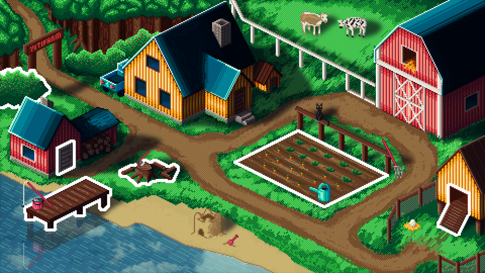

Engineering graduate specializing in game development with Unity and C#.
Projects
Walk the Dog on paper

Walk the Dog on Paper is a top-down rampage dog-walking simulator developed for a small indie game company(Underdog playhouse).
The game has a retro feel inspired by GTA 1 and GTA 2, with level progression based on an Angry Birds-style structure.
Image
itch.io
Trailer
Crops & Corpses

Crops & Corpses is a 2D top-down stardew valley-inspired farming and zombie survival game developed as a student project for a game development course.
The game features a unique blend of farming mechanics and zombie survival elements, where players must manage their farm while defending against waves of zombies.
Image
itch.io
Trailer
YetiFarm

YetiFarm is a student project developed for a company called YetiCare.
The game includes multiple simple minigames designed for the Yeti tablet, a large touchscreen device powered by Android and aimed at people with special needs.
The project focuses on creating engaging and accessible gameplay experiences that also support the development of the players cognitive, motor, and everyday skills.
Image
Trailer
CV
Download CV
Contact
{kind=link}